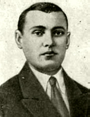

Сильницкий Михаил Фёдорович — пулемётчик партизанского отряда Д.Ф.Райцева на территории временно оккупированной Витебской области Белоруссии.
Родился 20 октября (по другим данным 20 ноября) 1920 года в деревне Заполье ныне Витебского района Витебской области Белоруссии в крестьянской семье. Белорус. Окончил 5 классов. Работал в колхозе, на стройках в Витебске.
В Красной Армии с мая 1941 года. Участник Великой Отечественной войны с июня 1941 года. Пулемётчик партизанского отряда под командованием Д.Ф.Райцева (Витебская область) комсомолец Михаил Сильницкий 28 марта 1942 года в бою с отрядом карателей у деревни Плоты и Курино, прикрывая отход отряда, уничтожил десятки гитлеровцев. Окружённый врагами, отважный партизан-пулемётчик пал смертью храбрых в рукопашной схватке.
Похоронен в братской могиле в деревне Курино Витебского района Витебской области.
Указом Президиума Верховного Совета СССР от 15 мая 1942 года за отвагу и геройство, проявленные в партизанской борьбе в тылу против немецких захватчиков Сильницкому Михаилу Фёдоровичу посмертно присвоено звание Героя Советского Союза.
Награждён орденом Ленина.
Мемориальная доска установлена на доме по улице, носящей имя Героя в Витебске. В школе деревни Курино открыт музей. Колхоз в Полоцком районе Витебской области Белоруссии носит имя Героя Советского Союза Михаила Сильницкого.